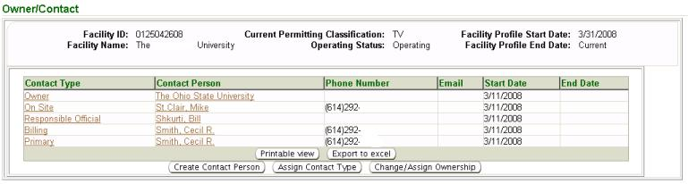
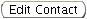
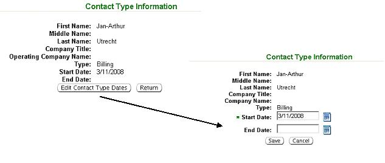
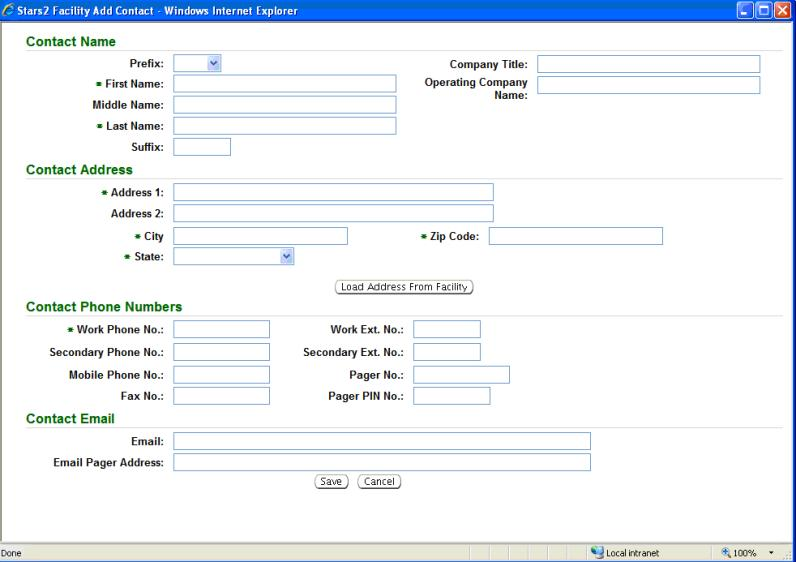
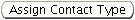
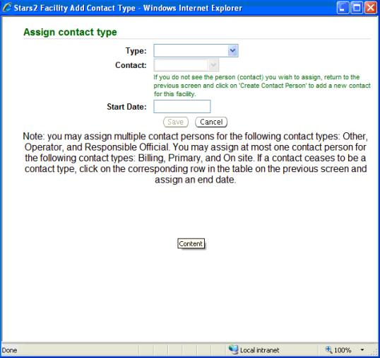
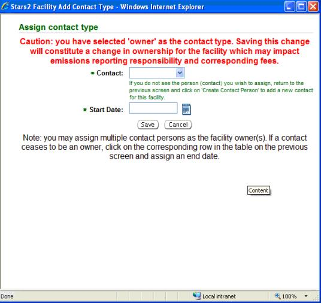

Previous Topic
Next Topic
| Facilities
|
Previous Topic |
Next Topic |
The system’s Owner/Contact page allows you to view current or historical Owner/Contact information. This page also allows you to enter new information or change current facility Owner/Contact information.
Asterisks(*) denote required input fields that the system requires. However, information in some other data fields may be needed for the system to perform other functions such as validation checks. Therefore, completing as many fields as possible with correct information benefits the system and all its users.
Information from the
Owner/Contact
list may be viewed, exported to Excel or printed. By
clicking  you may view and print. By clicking
you may view and print. By clicking  a pop-up will appear in
which you must click Open
in order to view the information in Excel.
a pop-up will appear in
which you must click Open
in order to view the information in Excel.
The following topics are included in this help page:
If current Owner/Contact information has previously been entered, they will be identified in the datagrid. The datagrid contains the following columns of information: Contact Type, Contact Person, Phone Number, Email, Start Date and End Date. Contact Type corresponds to the type identified by the facility in an application: Billing, On Site, Operator, Other, Primary, or Responsible Official.

Figure 1: Owner/Contact page
In some cases a person may only hold one office or function, or more than one, at the facility for a certain period of time. The Start Date and End Date fields identify what period of time is applicable.
To view the information for a specific Contact Person,
click on the
desired name. A pop-up will open with the detailed contact information
such as phone number, address, and email. If necessary, you may change
the contact information by clicking .
The pop-up will refresh and
changes may be entered; once you are finished entering new information
click  . If you are only viewing the
information and no changes are
required, click
to be returned to the Owner/Contact
page.
. If you are only viewing the
information and no changes are
required, click
to be returned to the Owner/Contact
page.
To assign a Start Date and/or End Date to an existing Contact Person with a designated Contact Type, click on the hyperlink in the datagrid for the Contact Type assigned to a specific person and the Contact Type Information pop-up window will appear.

Figure 2: Contact type information pop-up windows
Click and the pop-up will refresh where you can enter
a Start Date
and/or End
Date as appropriate. Click  or
or  .
The page refreshes and the
date(s) will appear for the selected Contact Type.
.
The page refreshes and the
date(s) will appear for the selected Contact Type.
To add a new contact person you must click below the datagrid on the Owner/Contact page as seen in Figure 1 above. A pop-up will open and the new contact information can be added into the input fields.

Figure 3: Contact information data fields
If necessary, you may click  to erase all the information
you just
entered. Once you are satisfied with the contact information, click
to erase all the information
you just
entered. Once you are satisfied with the contact information, click  .
More than one owner/contact may be entered for a single facility by
repeating the previous steps.
.
More than one owner/contact may be entered for a single facility by
repeating the previous steps.
The Owner/Contact list will now include the new contact person’s name, phone number and email, if applicable. You can assign the new contact a Contact Type now or wait until more information is known. Please see the “Assign Contact Type” section below for further instruction.
In order to assign a new Contact Type or change an existing Contact Type, there must be an existing Contact Person or you must create a new Contact Person. Click  below the datagrid on the Owner/Contact page as seen in Figure 1 above. An Assign Contact Type pop-up will appear.

Figure 4: Assign Contact Type pop-up window
Select a Type from the pick list.
NOTE: A facility can not have more than one Contact Person for Billing, Primary, and On Site. For example, there can not be two persons designated as Billing Contact. In order to reassign a Contact Type, you must first assign an End Date to the current person listed as the Contact Person and then reassign the Contact Type to the person you now wish to be identified.
After
selecting a Type
in the pop-up, select the name of the Contact Person
for which the Type
has been selected. Enter the Start Date
by either
entering it into the input field or clicking on the calendar icon  , to
the right of the field, and selecting a date. Enter today’s date if
start date is unknown. Once you have entered the information, click
, to
the right of the field, and selecting a date. Enter today’s date if
start date is unknown. Once you have entered the information, click  .
You can reassign the position or leave it alone, but remember that
Owner, Billing
and Primary
contacts must be entered in order to
validate any action such as an application, emissions inventory, or other
in the future.
.
You can reassign the position or leave it alone, but remember that
Owner, Billing
and Primary
contacts must be entered in order to
validate any action such as an application, emissions inventory, or other
in the future.
In order to assign or change ownership, there must be an existing Contact Person or you must create a new Contact Person. Click below the datagrid on the Owner/Contact page as seen in Figure 1 above and an Assign Contact Type pop-up will appear. You will see a caution statement that gives a warning concerning ownership change and emissions reporting potential impacts.

Figure 5: Assign Ownership Pop-up Window
Select a Contact
name from the pick list you wish to assign
ownership.
Enter the ownership Start
Date by either entering it into the input
field or clicking on the calendar icon  ,
to the right of the field, and
selecting a date. NOTE: Ownership dates can overlap. Once you have
entered the information, click
,
to the right of the field, and
selecting a date. NOTE: Ownership dates can overlap. Once you have
entered the information, click  .
.
Copyright © 1996, 2004, Oracle. All rights reserved.